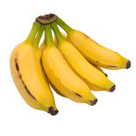
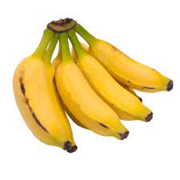

Vulgarmente, inclusive para efeitos comerciais, o termo "banana" refere-se às frutas de polpa macia e doce que podem ser consumidas cruas. Contudo, existem variedades de cultivo, de polpa mais rija e de casca mais firme e verde, geralmente designadas por plátanos, em língua espanhola, banana-pão ou banana-da-terra, em português, ou plantains, em inglês, que são consumidas cozinhadas (assadas, cozidas ou fritas), constituindo o alimento base de muitas populações de regiões tropicais. A maioria das bananas para exportação é do primeiro tipo, ainda que apenas 10 a 15 por cento da produção mundial seja para exportação, sendo os Estados Unidos e a União Europeia as principais potências.
 
